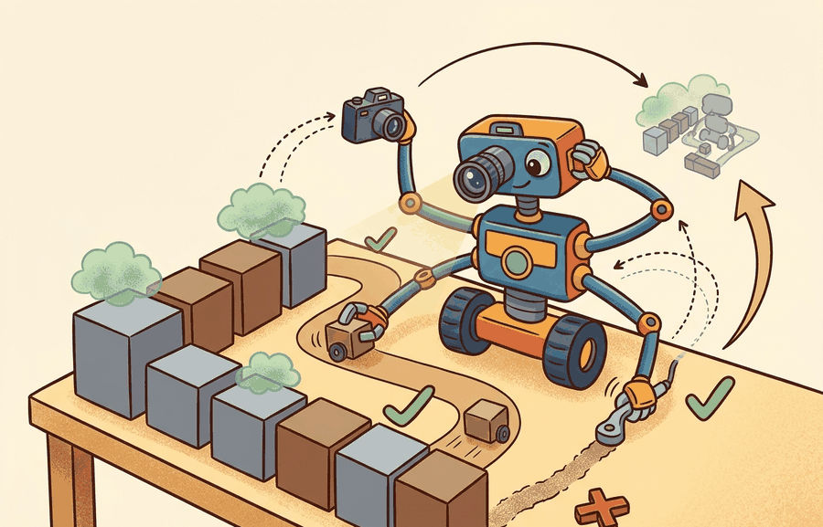

"Fourteen weeks is plenty of time, provided every theorem eventually touches a log file."

Figure 60.1A: A 14-week graduate course schedule arranged as a Gantt chart: Part 1 foundations occupy weeks 1-3, simulation and RL weeks 4-7, language-vision-action weeks 8-10, and evaluation and capstone weeks 11-14, with mid-term and project milestones marked.
A Graduate Plan With A Simulator
Big Picture
One-semester graduate course (14 weeks) gives Teaching with This Book a concrete systems role: use theory depth, paper reading, and substantial labs in the same weekly rhythm. The section keeps asking what the agent observes, what it remembers or updates, which action changes, and what evidence would convince a skeptical reader.
This section develops the technical contract for one-semester graduate course (14 weeks) into a usable mental model. First we define the object of study, then we connect it to the agent loop, then we test it with a compact implementation.
The key question in One-semester graduate course (14 weeks) is practical: what must the agent know, what can it observe, what action is available, and what evidence shows that the action worked under the stated conditions?
Action Is The Test
Graduate course design should be judged by the action it improves. A section claim is strong when it names the decision, the measurement, and the failure mode before a larger model or simulator is introduced.
Theory
For One-semester graduate course (14 weeks), the practical design rule is to make the interface inspectable before optimization begins: inputs, outputs, units, latency, bounds, and failure labels should all be visible in the saved artifact.
Mechanism
The mechanism in One-semester graduate course (14 weeks) is the contract between representation and action. Name what enters the module, what leaves it, which assumptions make that transformation valid, and which log would reveal a bad handoff.
Worked Example
For One-semester graduate course (14 weeks), keep one concrete rollout in view. A sensor reading becomes an estimate, the estimate constrains an action, the action changes the world, and the next observation confirms or contradicts the assumption. The section's idea is useful only if it improves that loop.
Library Shortcut
For One-semester graduate course (14 weeks), the small contract exists to expose the teaching artifact before tooling takes over. Use notebooks, simulators, shared logs, rubrics, and capstone studios only when they preserve the same observation, action, metric, and failure fields.
Practical Recipe
Write the observation, action, and success metric before choosing a model.
Build a baseline that is simple enough to debug by inspection.
Add the library implementation only after the baseline behavior is understood.
Record failures as structured cases: perception error, state error, planning error, control error, or evaluation error.
Run at least one perturbation test before trusting the result.
Common Failure Mode
The common mistake in One-semester graduate course (14 weeks) is to trust a component score before checking the closed-loop interface. The failure usually appears where state, timing, authority, or evaluation context crosses a module boundary.
Practical Example
A team using One-semester graduate course (14 weeks) starts by writing the task panel, not by picking the largest model. They keep a baseline run, a maintained-tool run, and a perturbation run in the same result folder. The comparison is accepted only when the action trace, metric, and failure labels come from one script.
Memory Hook
Treat one-semester graduate course (14 weeks) like a control-room label. If the label does not tell a future debugger what moved, what sensed, or what failed, it is decoration rather than engineering knowledge.
Research Frontier
For One-semester graduate course (14 weeks), the open research question is not whether a larger policy can produce a better demo. The sharper question is whether the method improves reliability across new scenes, new embodiments, delayed feedback, and rare failures under an evaluation protocol that another lab can reproduce.
Self Check
For One-semester graduate course (14 weeks), can you name the observation, action, protected assumption, success metric, and one likely failure case? If any field is vague, rewrite the contract before adding model complexity.
Topic-Native Deepening
A graduate version of the book should feel like a research apprenticeship, not a long reading list. The rhythm must make theory, implementation, evaluation, and paper discussion reinforce one another every week.
The main design problem is pacing depth without exhausting students. That means each week should have one load-bearing idea, one executable artifact, and one discussion prompt that pushes beyond engineering procedure.
Why This Section Matters
One-semester graduate course (14 weeks) becomes teachable once the student can state the operative variables, the decision boundary, and the evidence artifact. The section should therefore be read together with Part I foundations and Chapter 59 on capstones, where the same loop is developed from adjacent angles.
Formal Object
Model weekly load as $L_k = \alpha T_k + \beta C_k + \gamma P_k$, where $T_k$ is theory depth, $C_k$ is coding burden, and $P_k$ is paper-reading burden. A stable graduate schedule keeps $\max_k L_k$ bounded while letting the capstone load rise over the semester.
The load model is not precise accounting. It is a design check that prevents instructors from stacking a proof-heavy week, a heavy lab, and several frontier papers all at once.
Algorithm: Build a 14-week graduate sequence
Open with foundations, state estimation, and control so later papers have a common language.
Pair each conceptual week with one reproducible artifact, such as a simulator run or evaluation notebook.
Move from perception and policies into planning, world models, and deployment once students can debug the loop.
Code Fragment 60.1.A summarizes the topic-specific evidence card for one-semester graduate course (14 weeks).
The expected output should reveal the teaching rhythm. If the course card lacks milestone structure, the semester will drift toward unscaffolded final projects.
Library Shortcut
After the from-scratch contract is clear, the practical route uses Jupyter, MuJoCo, Isaac Lab, LeRobot, GitHub Classroom, lightweight CI, paper discussion sheets. The payoff is that standard interfaces, logging, batching, and replay support move from ad hoc glue code into maintained infrastructure, while the evidence schema stays the same.
Project Or Teaching Use
A good graduate offering uses the same lab artifact for both grading and seminar discussion. Students should be able to show a replay, defend one design choice, and connect it to a paper claim in the same class meeting.
Research Frontier
The frontier teaching question is how much foundation-model content can be added without crowding out control, estimation, and evaluation. This chapter argues for integration rather than replacement.
Expected Output Interpretation
For One-semester graduate course (14 weeks), the artifact should show the course-design decision, the evidence students must produce, and the failure mode that would trigger a revised assignment or rubric.
Key Takeaway
One-semester graduate course (14 weeks) matters when it changes an embodied agent's action under a stated observation and metric.
Use theory depth, paper reading, and substantial labs in the same weekly rhythm.
Strong evidence is saved as one artifact containing the baseline, the maintained-tool path, the metric panel, and labeled failures.
Exercise 60.1.1
Design a method-matched experiment for One-semester graduate course (14 weeks). Specify the environment, observation schema, action interface, metric, and one perturbation that targets the section's core assumption.
Section References
Biggs, J. Teaching for Quality Learning at University. Open University Press, 1999.
Use for constructive alignment between learning outcomes, activities, and assessment.
Anderson, L. W. and Krathwohl, D. R. A Taxonomy for Learning, Teaching, and Assessing. Longman, 2001.
Use for designing assessments that move from recall to analysis, creation, and evaluation.
What's Next?
Next, continue with the following teaching section, where the One-semester graduate course (14 weeks) contract becomes a concrete course-design decision.